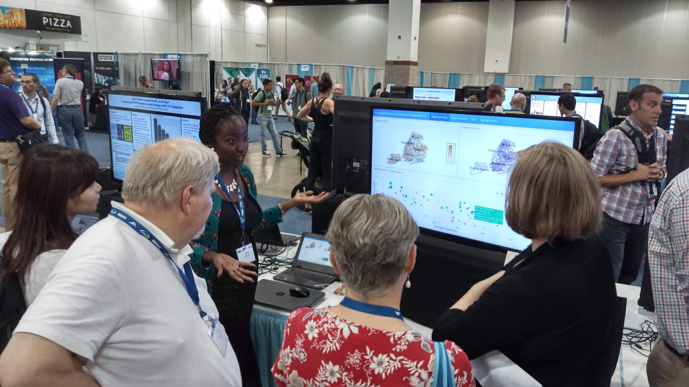
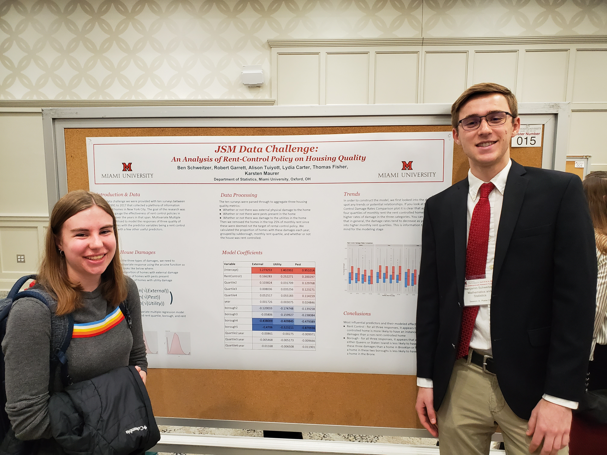

Students have regularly presented their findings at national and
international conferences, as well as the annual
Undergraduate
Research Forum held every April at Miami University.
National & International Conferences
Click to expand

Philips, Cody ,
“Crash-Safety
Ratings and the True Assessment of Injuries by Vehicle ”, 01 August
2016, Joint Statistics Meetings, Chicago, ILGarrett, Robert ,
“An
Analysis of Consumer Budgeting and the Great Recession ”, 31 July
2017, Joint Statistics Meetings, Baltimore, MD. Made the
AMSTAT
News .Philips, Cody ,
“An
Analysis of Crash-Safety Ratings and the True Assessment of Injuries by
Vehicle ”, 19 May 2018, Symposium on Data Science & Statistics,
Reston, VAGarrett, Robert ,
“Assessing
Prediction Error in Traditional Weather Forecasts vs. a Data-Centric
Approach ”, 30 July 2018, Joint Statistics Meetings, Vancouver,
BCSchweitzer, Benjamin ,
“An
Analysis on the Accuracy of Weather Forecasts ”, 30 July 2018, Joint
Statistics Meetings, Vancouver, BCRook, Nicole ,
“A
Shiny Way to Explore the Accuracy of Weather Forecast ”, 19 October
2018, Women in Data Science & Statistics, Cincinnati, OHCirkovic, Daniel ,
“Comparison
of Bootstrapping Techniques in Multivariate Time Series ”, 29 July
2019, Joint Statistics Meetings, Denver, COSchweitzer, Benjamin ,
“An
Analysis of Rent-Control Policy on Housing Quality ”, 28 July 2019,
Joint Statistics Meetings, Denver, COTuiyott, Alison ,
“Immigrant
Residency and Happiness in New York City ”, 28 July 2019, Joint
Statistics Meetings, Denver, COCarter, Lydia ,
“An
Analysis of Climate Change Impact on Public Opinion ”, 4 August 2020,
Joint Statistics Meetings, VirtualHo, Phuong ,
“Data
Expo 2020: Temperature Effect on the United States’ Agriculture ”, 4
August 2020, Joint Statistics Meetings, VirtualWarkentin, Coby ,
“Predicting
the Impacts of a Pandemic: An Analysis of the Relationship Between
Social Vulnerability and COVID-19 in the United States ”, 9 August
2021, Joint Statistics Meetings, VirtualCarter, Lydia ,
“Predicting
the Impacts of a Pandemic: An Analysis of the Relationship Between
Social Vulnerability and COVID-19 in the United States ”,
scheduled 7 October 2021, Women in Data Science &
Statistics, VirtualEverett, Aly ,
“An
Analysis on the Impact of Socioeconomic Status on Success in
School ”, 7 August 2022, Joint Statistics Meetings, Washington,
D.C.
Undergraduate Research Forum
Click to expand

Morris, Emily L. ,
2015
URF , “Modeling and Detecting Changes in Water Quality of a Midwest
Watershed.”Feeman, Alec ,
2016
URF , “Investing Using Short Term Statistical Forecasting”, part of
the
FYRE
Program Tatro, A.J. ,
2017
URF , “Bayesian Variable Selection in Time Series Regression with an
Application to Ecological Data”, co-advised with Jing Zhang.Schweitzer, Benjamin ,
2018
URF , “An Analysis on the Accuracy of Weather Forecasts”Garrett, Robert ,
2019
URF , “Applications of Voronoi Diagrams in Statistics and Data
Science”, co-advised with Karsten MaurerSchweitzer, Benjamin ,
2019
URF , “An Analysis of Rent-Control Policy on Housing Quality”,
co-advised with Karsten MaurerTuiyott, Alison ,
2019
URF , “Immigration Generation Status to Quality of Life Over Time”,
co-advised with Karsten MaurerCarter, Lydia ,
2020
URF , “An Analysis of Climate Change Impact on Society”, co-advised
with Karsten MaurerWarkentin, Coby and Carter, Lydia ,
2021
URF , “An Analysis of the Relationship Between Social Vulnerability
and COVID-19 Impact in the United States”Everett, Aly ,
2022
URF , “An Analysis on the Impact of Socioeconomic Status on Success
in School”